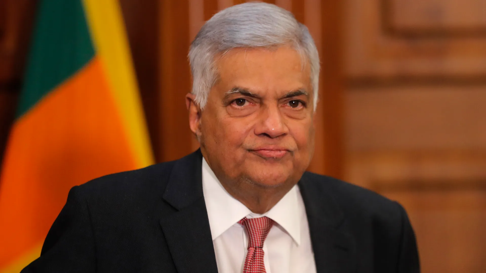
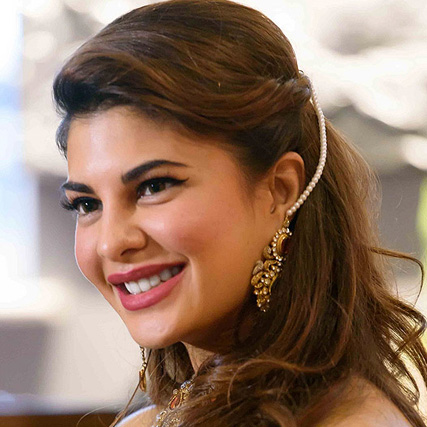

Ranil Wickremesinghe
The current President of Sri Lanka, Ranil Wickremesinghe is a veteran politician with decades of service to the country.
Kumar Sangakkara
A legendary cricketer and former captain of the Sri Lankan cricket team, known for his exceptional batting and leadership.

Jacqueline Fernandez
An international film actress and former Miss Sri Lanka, known for her contributions to Indian cinema.

Sirimavo Bandaranaike
The world’s first female Prime Minister, Sirimavo Bandaranaike left a lasting impact on global and local politics.
Mahela Jayawardene
Another cricketing great, Mahela Jayawardene is known for his elegance on the field and leadership of the Sri Lankan team.